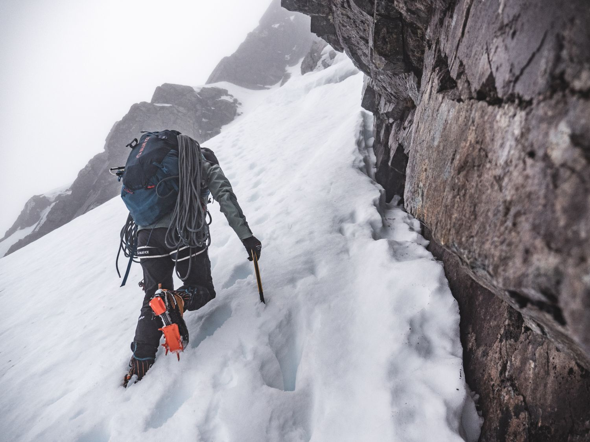
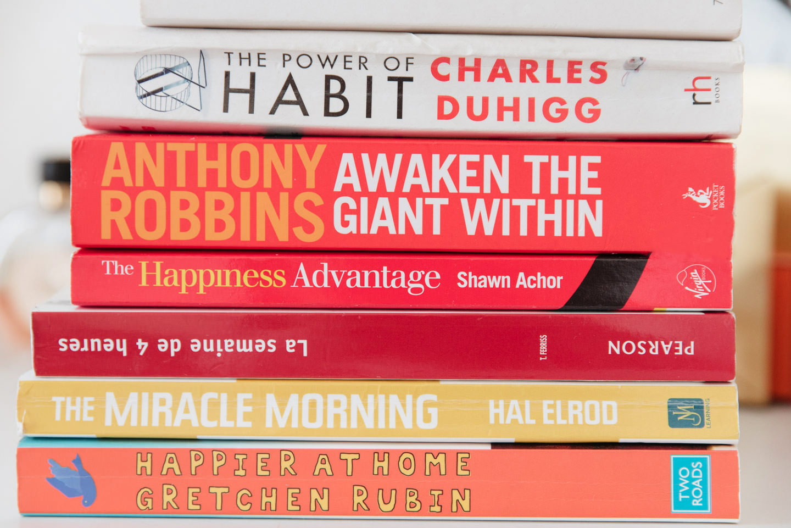

En dehors du travail



Data Analyst
« Adrien a rejoint Warmango en tant que Data Analyst en alternance … »
★★★★★
« Je suis son évolution depuis plusieurs années et c’est toujours un plaisir d’échanger avec lui … »
★★★★★
Basé à Lyon ou Genève ? Si mon profil a retenu votre attention, c’est sûrement pour une bonne raison. Échangeons !